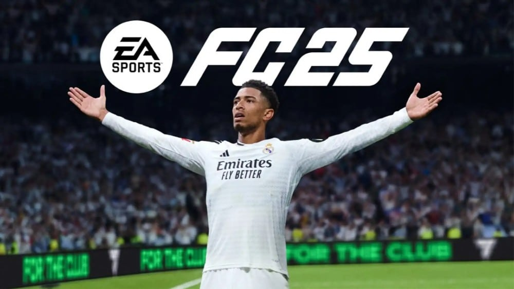
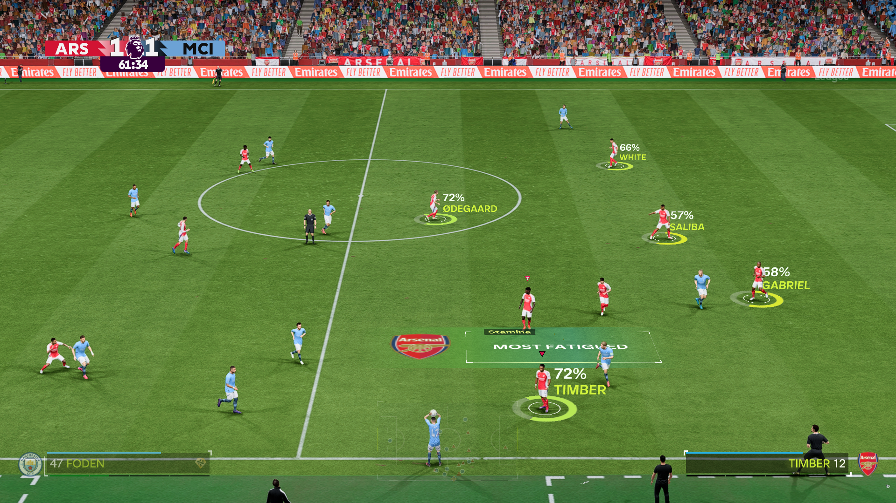
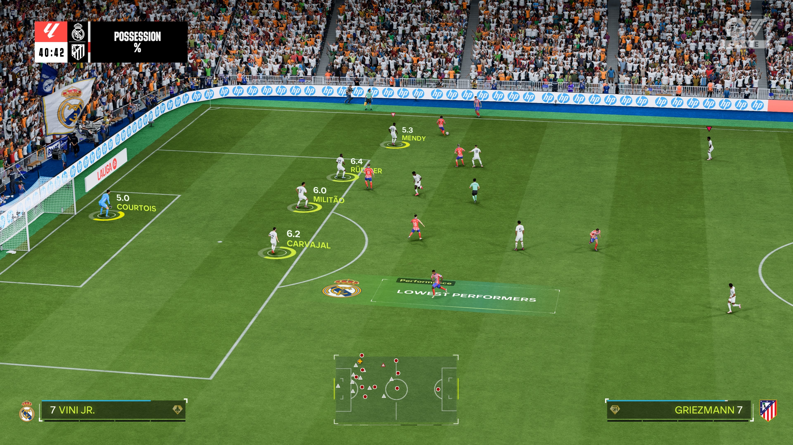
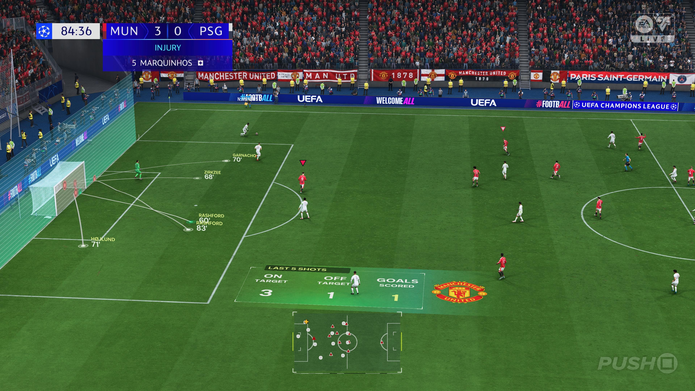
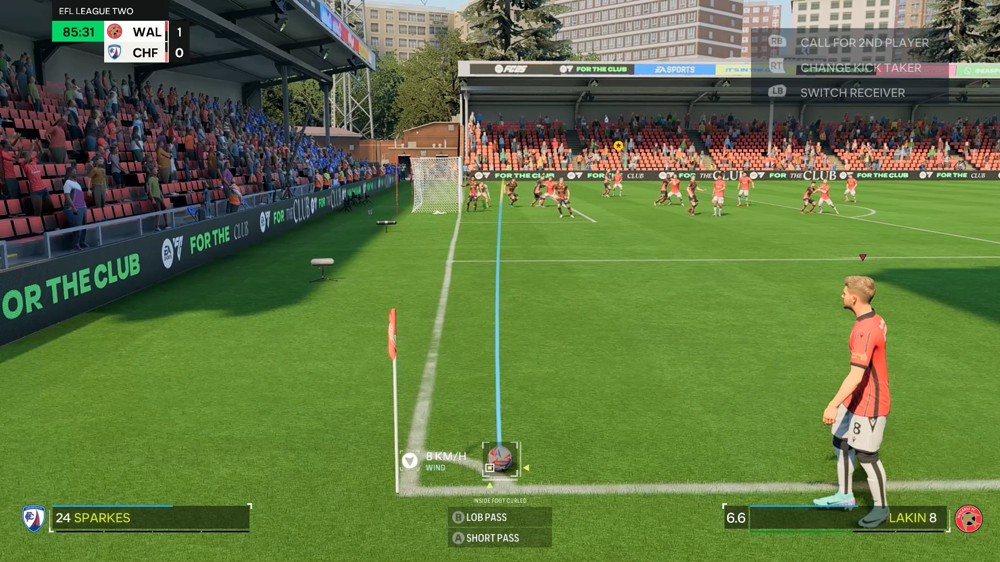
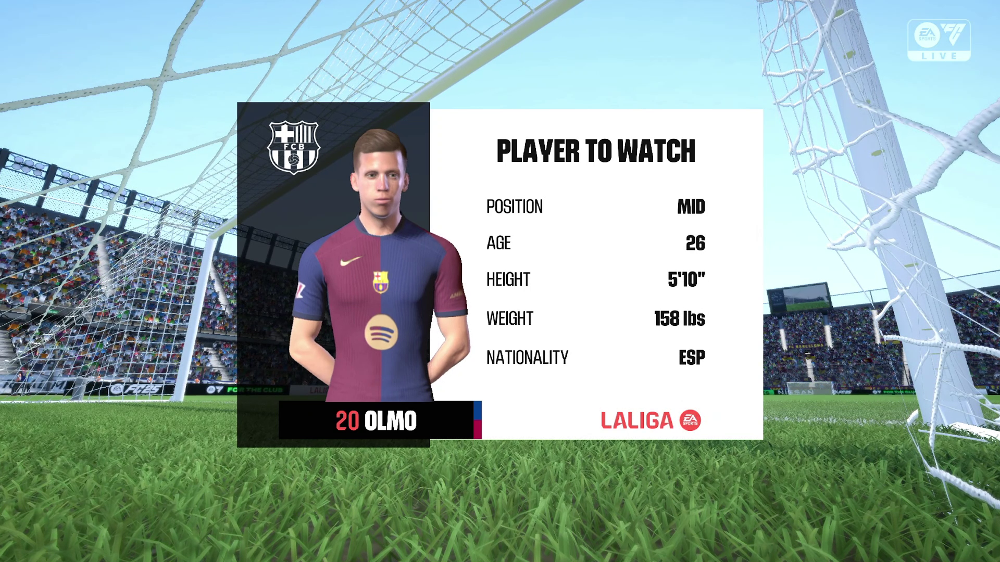
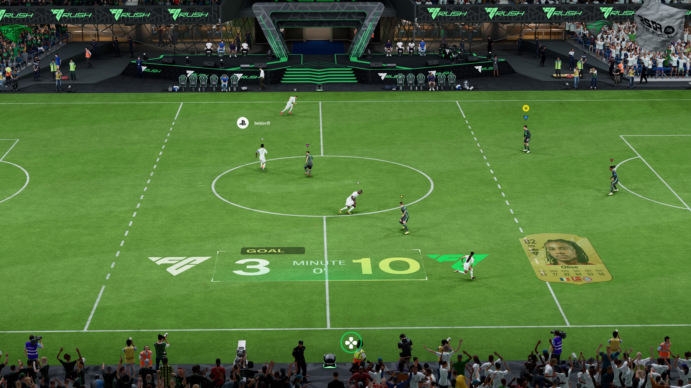

EA Sports FC 25
EA Sports · Frostbite · 2024

EA Sports FC 25, second installment of the EA Sports FC series, with Jude Bellingham as cover athlete.






The modularity payoff. The Intelligent AR component library shipped for FC 24 was reused here, a 2-day refresh estimate came in at 4.5 hours. Read the FC 24 case study →